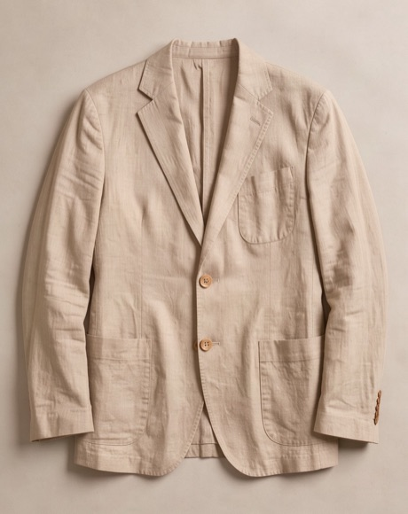
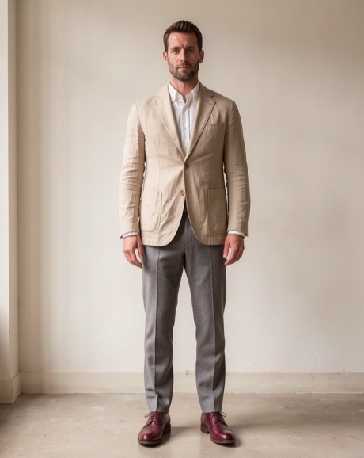

Dlaczego litera rozmiaru nie wystarcza
M w jednej marce to S w drugiej. Każdy producent ma własną siatkę wymiarów, a do tego krój: oversize, prosty, dopasowany. Dlatego litera mówi niewiele, a centymetry mówią wszystko.
W Osnowie przy każdej rzeczy podajemy obwody i długości gotowego ubrania, zmierzone na uszytej sztuce. To nie są wymiary ciała, tylko wymiary rzeczy, którą dostaniesz.
Masz już wymiar ulubionej rzeczy?
Porównaj go z tabelą wymiarów w cm przy Sukience Warta. Masz 30 dni na bezpłatną wymianę.
Sprawdź swój rozmiarPomiar w 5 minut krok po kroku
- Wybierz ubranie, które dobrze na Tobie leży i jest podobne do tego, które chcesz kupić. Do sukienki weź sukienkę, do marynarki marynarkę.
- Połóż je płasko na stole i wygładź dłonią, bez naciągania.
- Zmierz szerokość pod pachami i pomnóż przez 2. To obwód klatki lub biustu.
- Zmierz długość od najwyższego punktu ramienia do dołu.
- Porównaj z tabelą. Różnica do 2 cm oznacza ten sam rozmiar.
Przy spodniach zmierz pas na płasko i pomnóż przez 2, a do tego długość nogawki po wewnętrznym szwie.
Materiał zmienia wybór rozmiaru
Ten sam wymiar inaczej leży w lnie, a inaczej w wełnie. Len się nie rozciąga, więc gdy jesteś między rozmiarami, wybierz większy. Dzianina wełniana układa się do ciała, więc możesz wziąć mniejszy.
Przykład z telefonu: klientka nosiła rozmiar 40 w sieciówce i chciała zamówić L. Zmierzyła swoją ulubioną sukienkę, wyszło 95 cm w biuście. W tabeli Sukienki Warta to rozmiar M, więc zamówiła M i nie musiała niczego odsyłać.
Jak czytać opis kroju i opinie
Obok tabeli zwróć uwagę na opis kroju. „Oversize” oznacza, że rzecz ma celowo kilka centymetrów zapasu, więc nie bierz większego rozmiaru „na wszelki wypadek”. „Dopasowany” oznacza, że przy szerszej klatce lepiej sprawdzić wymiar dwa razy.
Drugim źródłem są opinie z rozmiarem kupującej osoby. Przy każdej opinii w naszym sklepie widać, jaki rozmiar ktoś kupił, ile ma wzrostu i co zwykle nosi. Jeśli trzy osoby o podobnym wzroście piszą, że model jest długi, możesz potraktować to poważnie.
Zwróć też uwagę na informację o modelce lub modelu: wzrost i rozmiar na zdjęciu. Gdy modelka ma 170 cm i nosi S, a Ty masz 160 cm, sukienka będzie u Ciebie dłuższa o kilka centymetrów.
Częste błędy przy wyborze rozmiaru
- Mierzenie siebie zamiast ubrania. Tabela w Osnowie podaje wymiary rzeczy, więc porównuj rzecz z rzeczą.
- Naciąganie dzianiny przy pomiarze. Sweter rozciągnięty o 3 cm da fałszywy wynik.
- Zamawianie dwóch rozmiarów „na próbę”. Działa, ale zwykle wystarczy jeden dobry pomiar i krótki telefon do nas.
- Pomijanie długości. Obwód się zgadza, a rękaw kończy się w połowie dłoni. Sprawdź oba wymiary.
Kiedy tabela nie wystarczy
Tabela nie powie Ci wszystkiego, jeśli masz bardzo różne proporcje, na przykład szerokie ramiona i wąską talię. Wtedy patrz na wymiar, który jest najtrudniejszy do poprawienia: przy marynarce ramiona, przy sukience biust, przy spodniach biodra.
Długość rękawa i nogawki łatwo skrócić. W naszej pracowni robimy to bezpłatnie przy pierwszym zamówieniu.
Jeśli wciąż masz wątpliwości, zamów i przymierz w domu. Masz 30 dni na bezpłatny zwrot albo wymianę rozmiaru. Szczegóły znajdziesz na stronie dostawa i zwroty, a o tym, jak len zachowuje się po praniu, piszemy we wpisie len czy bawełna na lato.
Powiązane produkty
Sukienka Warta
100% len, długość midi, wiązany pasek
4,8, przeczytaj 46 opinii
Najniższa cena z 30 dni przed obniżką: 399 zł


Pytania i odpowiedzi
Co zrobić, gdy jestem między rozmiarami?
Przy lnie wybierz większy, bo len się nie rozciąga. Przy wełnie mniejszy, bo dzianina układa się do ciała.
Czy mogę wymienić rozmiar?
Tak. Odeślij rzecz w ciągu 30 dni, a nowy rozmiar wyślemy bez opłat zaraz po odebraniu paczki.
Czy wymiary w tabeli to wymiary ciała?
Nie, to obwody i długości gotowego ubrania. Dlatego porównujesz je z ubraniem, a nie z własnym ciałem.
Czy mogę zapytać o konkretny model?
Tak, zadzwoń do nas. Zmierzymy rzecz przy Tobie i podamy dowolny wymiar.
Gotowa lub gotowy na zakupy bez zgadywania?
Wymiary w cm, darmowa dostawa od 299 zł i 30 dni na bezpłatny zwrot.
Sprawdź swój rozmiar